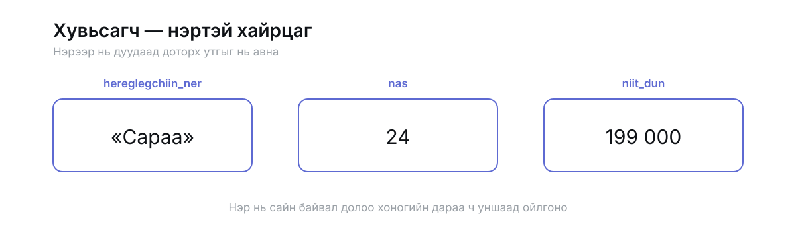
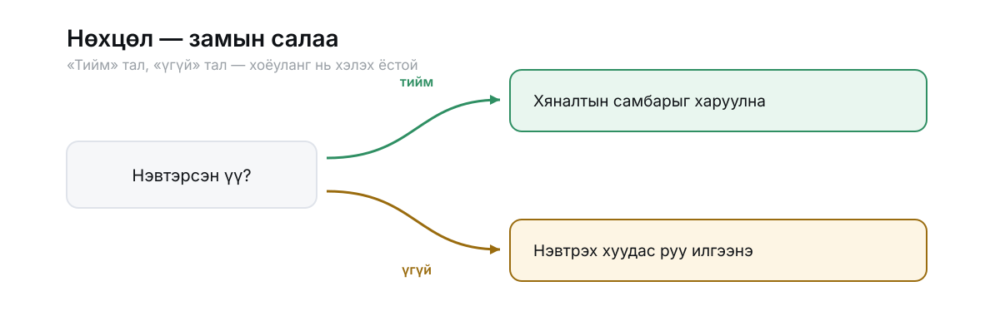
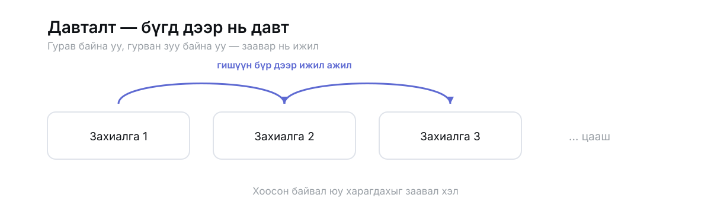
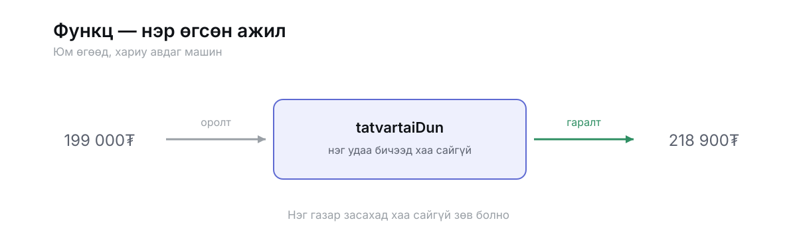
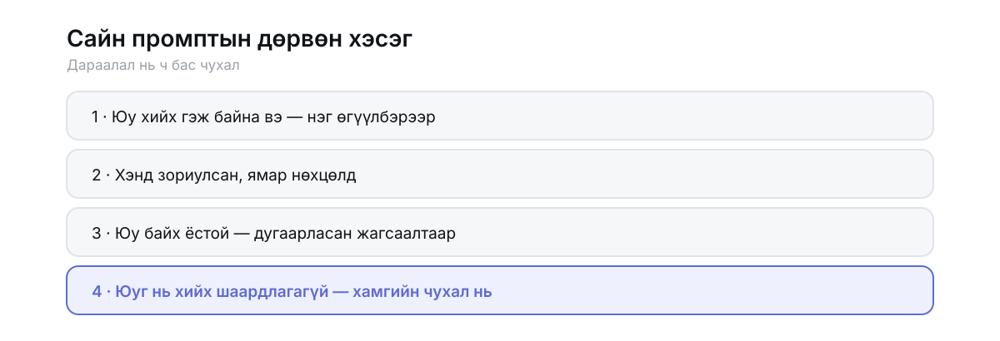

ГАРЫН АВЛАГА · 02
Кодын үндсэн ойлголтууд, тэднийг промпт болгож бичих арга, гарсан үр дүнг унших, шалгах. Код бичихгүйгээр.
Эхний бүлэг нь үг хэллэг, хоёрдугаар нь өгөгдөл, гуравдугаараас нь эхлээд захиалга.
Код бичихгүй ч гэсэн юу захиалж байгаагаа мэдэхгүй бол захиалга чинь бүрхэг болно. Эдгээр таван үг бол хамгийн бага толь бичиг — эднийг мэдэж байвал хүссэнээ нарийн хэлж чадна.
Ямар ч хэлэнд байдаг, нэг удаа ойлговол хангалттай
Утга хадгалдаг, нэр өгсөн хайрцаг.
Програм ажиллаж байхдаа олон зүйлийг санаж байх хэрэгтэй: хэн нэвтэрсэн, сагсанд юу байгаа, хэдэн төгрөг болсон. Тэр бүрийг нэртэй хайрцагт хийнэ.

a, x гэсэн нэрс долоо хоногийн дараа юу ч хэлэхгүй.Дүрэм. «Хэрэв ийм бол тэгнэ, үгүй бол өөрөөр.»
Захиалахад дүрмээ бүтнээр нь хэлэх ёстой. Хамгийн түгээмэл алдаа нь зөвхөн «тийм» талыг хэлж, «үгүй бол юу болохыг» мартдаг явдал.

Жагсаалтын гишүүн бүр дээр ижил ажлыг хий.
Дэлгэц дээрх бараг бүх жагсаалт ингэж зурагддаг: сургалтын карт, захиалгын мөр, мессеж. Гурав байна уу, гурван зуу байна уу — заавар нь ижил.

Нэр өгсөн ажил. Юм өгөөд, хариу авна.
Нэг ажлыг гурван газар давтаж бичсэн бол алдааг гурван газар засах болно. Магадгүй хоёрыг нь зассан ч гурав дахийг мартана.

Хайрцагт юу байгаа нь — текст үү, тоо юу, тийм/үгүй юу.
Хоёр тоог нэмбэл нийлбэр гарна. Хоёр текстийг «нэмбэл» залгагдана. Маягтаас ирсэн бүх зүйл эхлээд текст байдаг — тоо болгож хөрвүүлэхгүй бол нийлбэр гэнэт «10001000» болчихно.
Тоогоор хадгалбал эхний тэг нь алга болно, мөн +976 гэсэн тэмдэг багтахгүй. Данс, бүртгэлийн дугаар, гэрийн дугаар — бүгд текст.
Юм барихын өмнөх хамгийн их цаг хэмнэдэг алхам
Цаас аваад хүснэгт зур. Толгой мөрөнд нь шинжүүд, доор нь хоёр жишээ мөр. Гурван хүснэгт зурахад ихэнх системийн бүтэц тодорно.
| Хүснэгт | Талбарууд |
|---|---|
| Хэрэглэгч | нэр, утас, хаяг |
| Бүтээгдэхүүн | нэр, үнэ, үлдэгдэл, зураг |
| Захиалга | огноо, дүн, төлөв, хэн захиалсан |
Дараа нь хүснэгтүүдийн хооронд сум зур. Захиалга нь хэрэглэгч рүү заана — «энэ захиалга хэний вэ». Энэ сумнууд бол системийн араг яс.
«Гурван зүйл хадгалах хэрэгтэй. Хэрэглэгч: нэр, утас, хаяг. Бүтээгдэхүүн: нэр, үнэ, үлдэгдэл. Захиалга: огноо, дүн, төлөв. Захиалга бүр нэг хэрэглэгчийнх бөгөөд олон бүтээгдэхүүн агуулж болно.»
Эдгээрийг эхэнд нь асуувал хожим дахин барих шаардлагагүй болно.
Дөрвөн хэсэг, дараалалтай нь

Гоо сайхны салоны цаг захиалгын хуудас хийх гэж байна. Үйлчлүүлэгчид ихэвчлэн утсаараа орно.
1. Үйлчилгээний жагсаалт, тус бүр үнэ, үргэлжлэх хугацаатай
2. Огноо, цаг сонгох хэсэг — завгүй цагийг сонгуулахгүй
3. Нэр, утсаа бичээд баталгаажуулах
4. Баталгаажсаны дараа «Таны цаг бүртгэгдлээ» гэсэн мэдэгдэл
Төлбөр, бүртгэл хоёр хэрэггүй. Эхлээд юу хийхээ хэлээд, дараа нь хийгээрэй.
«Надад сайт хийж өг.»
Дээрх дөрвөн хэсэгтэй, дугаарласан жагсаалттай, хязгаартай.
Бүхнийг нэг дор захиалбал бүхнийг нэг дор шалгана
Хуудас, хэсгүүд нь. Загваргүй ч гэсэн байрлал нь тодрох.
Жинхэнэ текст, зураг. Дүүргэлт биш.
Өнгө, фонт, зай.
Товч дархад юу болох.
Хоосон, алдаа, ачаалж байгаа төлөв.
Захиалга бүртээ «Эхлээд юу хийхээ хэлээд, зөвшөөрөл аваад дараа нь хийгээрэй» гэж нэмээрэй. Хорин файл бичигдсэний дараа «би тэгэхийг хүсээгүй» гэхээс хамаагүй хямд.
Гурван зүйлийг заа: аль хэсэг, юу нь, юу болгох.
«Арай сайхан болгооч.»
«Толгой хэсгийн доорх зайг хоёр дахин ихэсгээд, гарчгийг арай том болго. Бусдыг нь бүү хөндөөрэй.»
Энэ бол чиний ажил — хиймэл оюун өөрийгөө шалгаж чадахгүй
| Юу | Яаж |
|---|---|
| Ажиллаж байна уу | Хийж үз. Зөвхөн хараад бүү дүгнэ. |
| Утсан дээр | Дэлгэцээ нарийсга. Бүх зүйл багтаж байна уу? |
| Хоосон тохиолдол | Жагсаалт хоосон байхад юу харагдах вэ? |
| Буруу оролт | Хоосон талбар илгээвэл? Утасны оронд үсэг бичвэл? |
| Урт агуулга | Маш урт нэр бичвэл байрлал эвдрэх үү? |
| Удаан сүлжээ | Ачаалж байх үед юу харагдах вэ? |
| Буцах | Хөтчийн буцах товч зөв ажиллаж байна уу? |
Доорх мөрүүд нь хаана болсныг хэлдэг. Эхний мөр дангаараа хангалтгүй.
«Өмнө нь ажиллаж байсан, үнийн талбар нэмсний дараа эхэлсэн» — ихэвчлэн шийдвэрлэх хариу.
Хөтөч дээр F12 → Console. Мөн терминалын цонх. Заримдаа нэг нь чимээгүй байдаг.
Тооны тоглоом, эхний өгүүлбэрээс бэлэн болтол
Компьютер 1-ээс 100 хүртэлх тоо санана. Хэрэглэгч таана. Тоглоом «их байна» эсвэл «бага байна» гэж хэлж өгнө.
«Тоо таах тоглоом хийх гэж байна. Хэрэглэгч хөтөч дээрээ тоглоно, утсан дээр ч ажиллах ёстой. Тоглоом дуусахад хэдэн удаа таасныг харуулна.»
1. Компьютер 1-100 хооронд санамсаргүй тоо сонгоно
2. Хэрэглэгч тоо бичээд «Таах» товч дарна
3. Их эсвэл бага гэдгийг хэлнэ
4. Зөв таавал хэдэн удаа оролдсоныг харуулна
5. «Дахин тоглох» товч
Оноо хадгалах, нэвтрэх хэрэггүй. Эхлээд юу хийхээ хэлээд дараа нь хийгээрэй.
Хоосон талбараар дарвал? Үсэг бичвэл? 0 эсвэл 200 бичвэл? Утсан дээр товч хангалттай том уу? «Дахин тоглох» дархад тоо шинээр сонгогдож байна уу?
«Оролдлого бүрийг доор нь жагсаалтаар харуулаад өгөөч — ямар тоо бичсэн, хариу нь юу байсныг.»
«Одоогийн байдлыг хадгалаад, юу хийснийг товч бичиж өгөөч.»
Ижил замаар яв: гурван өгүүлбэр, жагсаалт, хязгаар, дараа нь шалга. Санаа олдохгүй бол — тооны машин, жагсаалт тэмдэглэгч, өдрийн тэмдэглэл. Гурвуулаа жижиг бөгөөд бүтэн.
Хаалт доторхыг л сольж ашигла
«[юу] хийх гэж байна. Хэрэглэгч нь [хэн], ихэвчлэн [утас/компьютер]-аар орно. 1) […] 2) […] 3) […]. Одоохондоо [юу] хэрэггүй. Эхлээд юу хийхээ хэлээд дараа нь хийгээрэй.»
«[хүснэгт 1]: [талбарууд]. [хүснэгт 2]: [талбарууд]. [хүснэгт 2] бүр нэг [хүснэгт 1]-ынх.»
«[юу хийж байхад] дараах алдаа гарлаа: [мессежийг бүтнээр нь]. Эхлээд шалтгааныг тайлбарлаад дараа нь зас.»
«[аль хэсгийг] [яаж] болгож өгөөч. Бусдыг нь бүү хөндөөрэй.»
«Энэ хэсэг юу хийж байгааг код мэдэхгүй хүнд ойлгомжтой, богинохон тайлбарлаж өгөөч.»
«Энийг хараад юуг нь сайжруулж болох вэ? Ямар тохиолдолд эвдрэх вэ? Хамгийн чухал гурвыг нь эрэмбэлээд хэлээрэй.»
«Одоогийн ажиллаж байгаа байдлыг хадгалаад, юу өөрчилснийг товч бичиж өгөөч.»
Гацвал бидэнтэй холбогдоорой: info@jarvis.mn · +976 7000 0000.
TsStark Academy — онлайн код сургалт · tsstark.com · «Кодын суурь»-ийн дагалдах материал, нэгдүгээр хэвлэл